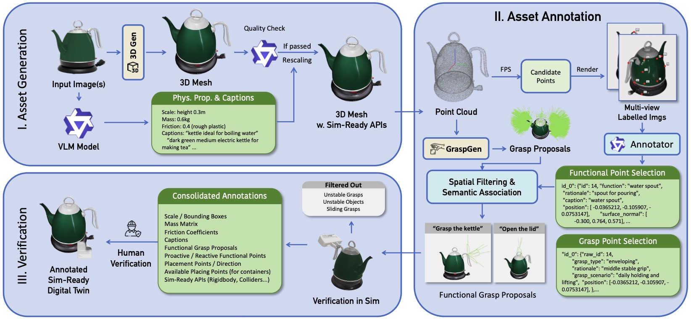
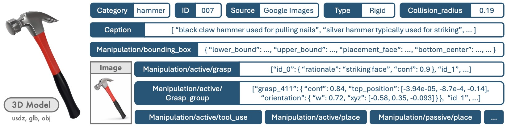
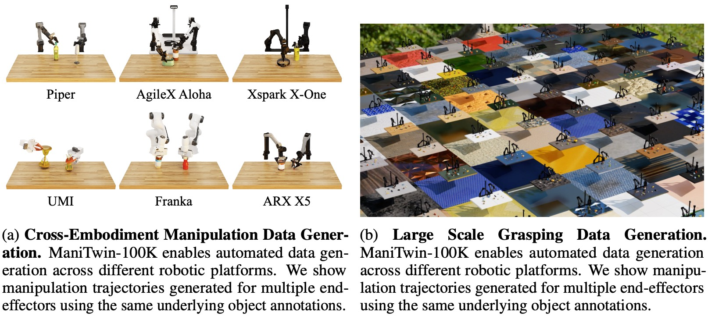
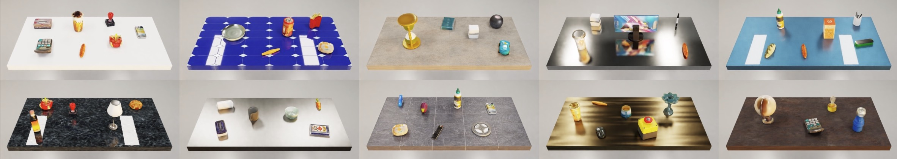
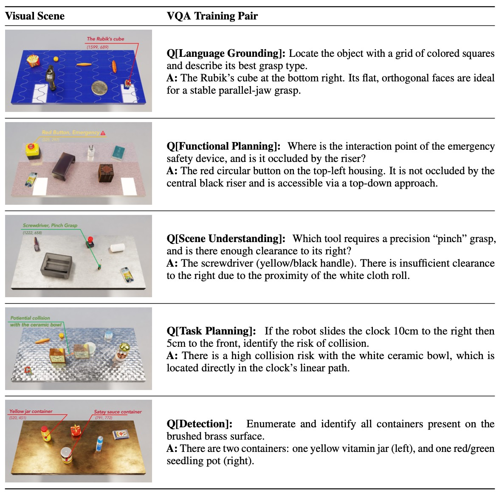
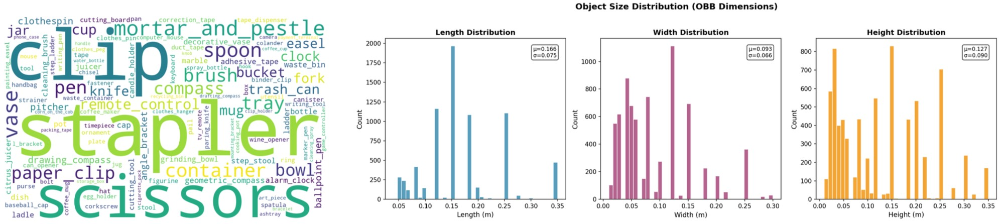
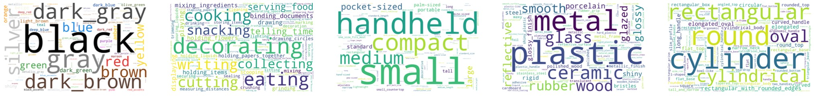
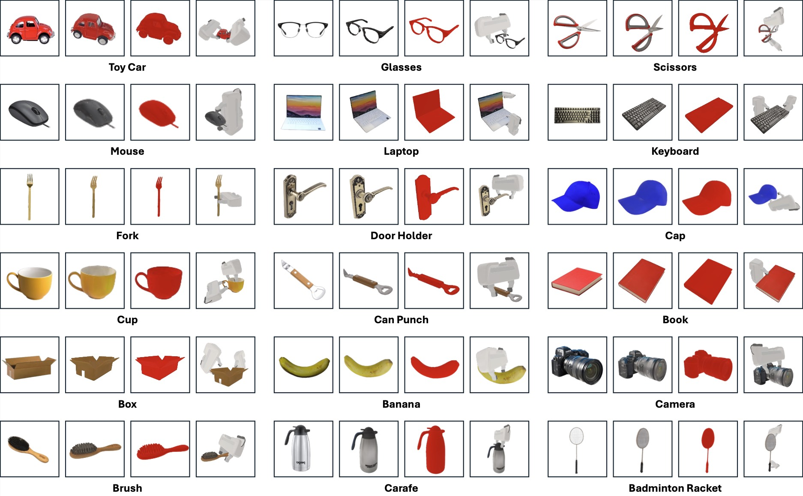

Abstract. Learning in simulation provides a useful foundation for scaling robotic manipulation capabilities. However, this paradigm often suffers from a lack of data-generation-ready digital assets, in both scale and diversity. In this work, we present ManiTwin, an automated and efficient pipeline for generating data-generation-ready digital object twins. Our pipeline transforms a single image into simulation-ready and semantically annotated 3D asset, enabling large-scale robotic manipulation data generation. Using this pipeline, we construct ManiTwin-100K, a dataset containing 100K high-quality annotated 3D assets. Each asset is equipped with physical properties, language descriptions, functional annotations, and verified manipulation proposals. Experiments demonstrate that ManiTwin provides an efficient asset synthesis and annotation workflow, and that ManiTwin-100K offers high-quality and diverse assets for manipulation data generation, random scene synthesis, and VQA data generation, establishing a strong foundation for scalable simulation data synthesis and policy learning.

ManiTwin Pipeline. Our pipeline consists of three stages: (I) Asset Generation transforms input images into simulation-ready 3D meshes with VLM-estimated physical properties; (II) Asset Annotation combines FPS-based candidate sampling, VLM-driven functional and grasp point selection, and learning-based grasp proposal generation; (III) Verification validates annotations through physics simulation and human review, producing fully annotated digital twins ready for robotic manipulation research.


ManiTwin Data Generation. (Left) Cross-embodiment manipulation trajectories across multiple end-effectors using shared object annotations. (Right) Grasping data generation.

Layout Generation. Using placement and collision radius annotations, we generate diverse multi-object scene layouts that are collision-free and physically plausible.

VQA Data Generation. Each pair links manipulation-relevant questions to grounded scene understanding, covering language grounding, functional planning, scene understanding, task planning, and object detection.



ManiTwin-100K Dataset Examples. Each row shows one object. From left to right: input image, generated 3D asset, mesh visualization, and samples of simulation-verified grasp poses.
@misc{wang2026manitwinscalingdatagenerationreadydigital,
title={ManiTwin: Scaling Data-Generation-Ready Digital Object Dataset to 100K},
author={Kaixuan Wang and Tianxing Chen and Jiawei Liu and Honghao Su and Shaolong Zhu and Minxuan Wang and Zixuan Li and Yue Chen and Huan-ang Gao and Yusen Qin and Jiawei Wang and Qixuan Zhang and Lan Xu and Jingyi Yu and Yao Mu and Ping Luo},
year={2026},
eprint={2603.16866},
archivePrefix={arXiv},
primaryClass={cs.RO},
url={https://arxiv.org/abs/2603.16866},
}If you have any questions, please contact us at kaixuan.wang@connect.hku.hk.